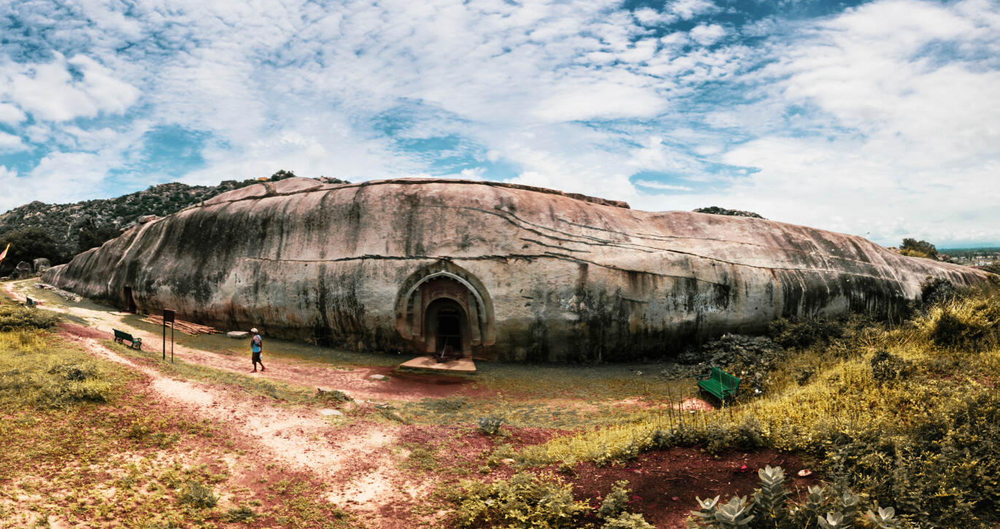
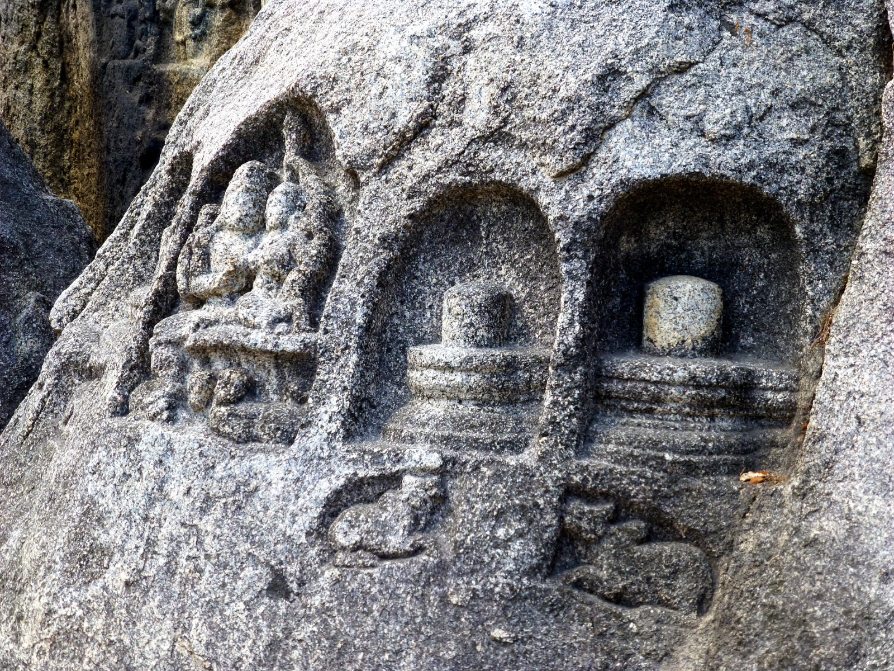
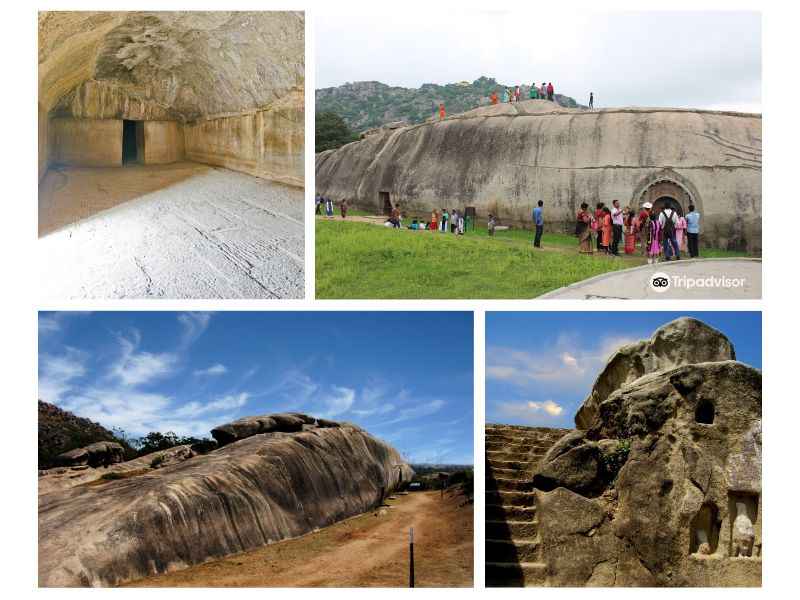

<!DOCTYPE html>
<html lang="en">
<head>
    <meta charset="UTF-8">
    <meta http-equiv="X-UA-Compatible" content="IE=edge">
    <meta name="viewport" content="width=device-width">
    <title>Document</title>
    <script>
        function getPics() {} //just for this demo
        const imgs = document.querySelectorAll('.gallery');
        const fullPage = document.querySelector('#fullpage');
        
        imgs.forEach(img => {
          img.addEventListener('click', function() {
            fullPage.style.backgroundImage = 'url(' + img.src + ')';
            fullPage.style.display = 'block';
          });
        });

        $('img[eng]').addClass('eng').click(function(){
    var src = $(this).attr('src');
    $('<div>').css({
        background: 'RGBA(0,0,0,.5) url('+src+') no-repeat center',
        backgroundSize: 'contain',
        width:'100%', height:'100%',
        position:'fixed',
        zIndex:'10000',
        top:'0', left:'0',
        cursor: 'zoom-out'
    }).click(function(){
        $(this).remove();
    }).appendTo('body');
});
        </script>
</head>
<body>
    
</body>
</html>
<style>
    *{
        margin: 9px 9px;
    }

   /* Add a black background color to the top navigation bar */
.topnav {
  overflow: hidden;
  background-color: #e9e9e9;
}

/* Style the links inside the navigation bar */
.topnav a {
  float: right;
  display: block;
  color: black;
  text-align: center;
  padding: 14px 16px;
  text-decoration: none;
  font-size: 17px;
}

/* Change the color of links on hover */
.topnav a:hover {
  background-color: #ddd;
  color: black;
}

/* Style the "active" element to highlight the current page */
.topnav a.active {
  background-color: #2196F3;
  color: white;
}

/* Style the search box inside the navigation bar */
.topnav input[type=text] {
  float: right;
  padding: 6px;
  border: none;
  margin-top: 20px;
  margin-right: 16px;
  font-size: 17px;
}

/* When the screen is less than 600px wide, stack the links and the search field vertically instead of horizontally */
@media screen and (max-width: 600px) {
  .topnav a, .topnav input[type=text] {
    float: none;
    display: block;
    text-align: left;
    width: 100%;
    margin: 0;
    padding: 14px;
  }
  .topnav input[type=text] {
    border: 1px solid #ccc;
    
  }
}


#fullpage {
  display: none;
  position: absolute;
  z-index: 9999;
  top: 0;
  left: 0;
  width: 100vw;
  height: 100vh;
  background-size: contain;
  background-repeat: no-repeat no-repeat;
  background-position: center center;
  background-color: black;
}


.headline{
    height: 100px;
    width: 100%;
    font-size: 25px;
}
.image{
    height: 500px;
    width: 100%;
    border: 2px white;
    border-radius: 8px;
    
}
.image ul {
    align-content: baseline;
    
}

.container{
    display: flex;
}
.data{
    overflow: auto;
    height: 400px;
    width: 800px;
    font-size: large;
    /* border: 2px solid black;
    border-radius: 8px; */
}
/* .gallary{
    height: 400px;
    width: 660px;
    border: 2px solid black;
    border-radius: 8px;
} */
.photo1{
    height: 400px;
    width: 60%;
    /* border: 2px solid black;
    border-radius: 8px; */
    float: right; 
}
/* .short{
    position: absolute;
    top: 1500px;
    height: 400px;
    width: 26%;
    border: 2px solid black;
    border-radius: 8px;

} */
.bg{
    bottom: 0px;
    height: 50px;
    width: 100%;
}


nav {
    background-color: rgb(187, 186, 186);
    color: black;
  position: relative;
  padding-bottom: 12px;
}
nav.line {
  height: 2px;
  position: absolute;
  bottom: 0;
  margin: 10px 0 0 0;
  background: #d10d34;
}
nav ul {
    
  padding: 0;
  margin: 0;
  list-style: none;
  display: flex;
}
nav ul li {
  margin: 0 40px 0 0;
  opacity: 4;
  transition: all 0.4s ease;
}
nav ul li:hover {
    color: #d10d34;
  opacity: 1;
}
nav ul li.active {
  opacity: 1;
}
nav ul li:last-child {
  margin-right: 0;
}
nav ul li a {
  text-decoration: none;
  color: #000000;
  text-transform: uppercase;
  display: block;
  font-weight: 600;
  letter-spacing: 0.2em;
  font-size: 14px;
}


.short1{
    position: absolute;
    /* top: 1500px; */
    /* left: 420px; */
    height: 500px;
    width: 36%;
    border: 2px solid black;
    border-radius: 8px;

}
</style>
<body>
    <nav>
        <ul>
          <li class="active"><a href="">Home</a></li>
          <li><a href="">About</a></li>
          <li><a href="">Contact Us</a></li>
        </ul>
    </nav>
    <div class="address">
        <br>
       <h3>Home/Heritage/Barabar Caves</h3> 
    </div>
    <br>
    <div class="headline">
        <h1>Barabar Caves</h1>
    </div>
    <div class="image">
        
    </div>
    <br><br><br><br><br><br>
    <div class="container"> 
    <div class="data">
         <p>
            If you are keen to explore about ancient monumental caves and rocky mountains,then The Barabar Caves is definatelt the best place for you. <br>
            The Barabar Hill Caves (Hindi बराबर, Barābar) are the oldest surviving rock-cut caves in India, dating from the Maurya Empire (322–185 BCE), some with Ashokan inscriptions, located in the Makhdumpur region of Jehanabad district, Bihar, India.It is 24 km (15 miles) north of Gaya.
<br><br>
Barabar Caves are the ancient Buddhist caves located at Barabar near Gaya in Bihar. These are the oldest surviving rock-cut caves in India, and among the most-visited places in Bodhgaya.
<br><br>
Situated on the twin hills of Barabar and Nagarjuni, Barabar Caves are a set of 7 rock-cut-caves dating back to the 3rd century BC, during the Maurya period. These rock-cut chambers bear dedicatory inscriptions which informs that the four caves on Barabar hill were assigned by King Ashoka to Ajivika monks in 261 BC. Another inscription on the Nagarjuni hill is of the grandson of King Ashoka, Dasaratha Maurya, which tells that the Ajivikas continued to enjoy imperial Mauryan patronage for long.
<br><br>
Out of the 7 caves, the Barabar Hill houses 4 caves and the Nagarjuni Hill is having 3 caves. Carved out of granite,the oldest igneous rocks of the world.The caves on Barabar Hill are named as Karna Chaupar, Lomas Rishi Cave, Sudama Cave, and Vishwamitra Cave. All the caves gives us a clear cut idea of the Mauryan Age.
<br><br>

The nearby caves of Nagarjuni Hill were built a few decades later than the Barabar Caves and were consecrated by Dasaratha Maurya, Ashoka's grandson and successor, for the Ajivikas sect. The three caves are Gopi-ka-Kubha, Vadithi-ka-Kubha cave, and Vapiya-ka-Kubha cave. Also called Gopi or simply Nagarjuni, Gopi-ka-Kubha is the largest of all the caves of the Barabar complex. It consists of a single large oblong room. The cave lies on the south bank of the hill, dug by King Dasharatha, according to the inscription that was engraved above the front door.
        </p>
    </div>
    <div class="gallary">
        
        <ul>
            <li>Distance From Bhagalpur: 225 Kms</li>
            <li>Via NH33</li>
        </ul>
        <div id="fullpage" onclick="this.style.display='none';"></div>
    </div>
        </div>
        
        <div class="photo1">
            <div class="mapouter"><div class="gmap_canvas"><iframe class="gmap_iframe" width="100%" frameborder="0" scrolling="no" marginheight="0" marginwidth="0" src="https://maps.google.com/maps?width=600&amp;height=500&amp;hl=en&amp;q=barabar caves&amp;t=h&amp;z=11&amp;ie=UTF8&amp;iwloc=B&amp;output=embed"></iframe><a href="https://capcuttemplate.org/">Capcuttemplate.org</a></div><style>.mapouter{position:relative;text-align:right;width:100%;height:500px;}.gmap_canvas {overflow:hidden;background:none!important;width:100%;height:500px;}.gmap_iframe {height:500px!important;}</style></div>
        </div>

       <div class="short1">
        
       </div>
       <br><br><br><br><br><br><br><br><br><br><br><br><br><br><br><br><br><br><br><br><br><br><br><br><br><br><br>
       <br><br><br><br><br>
</body>
</html>
